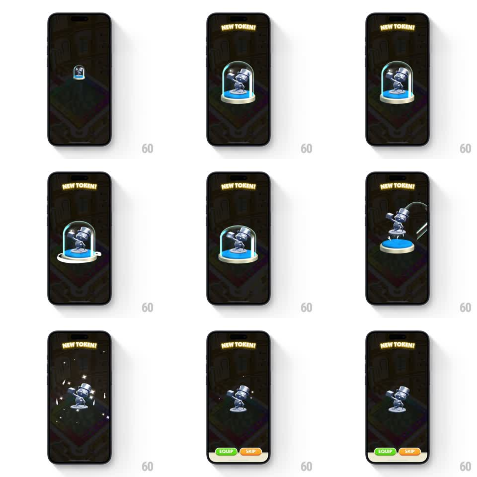

Media
Frame-by-frame

Rebuild this animation 1:1: Monopoly Go's token reveal - a glass dome over the new token rises, tips away, and vanishes while the token sparkles on its pedestal and the action buttons slide up.

Rebuild this animation 1:1: Monopoly Go's token reveal - a glass dome over the new token rises, tips away, and vanishes while the token sparkles on its pedestal and the action buttons slide up. ## Integration Integration: stack-agnostic spec - springs given as stiffness/damping, timed motions as duration + curve; map every value to your framework and animation library of choice. ## Scene Dark stage with a glowing "NEW TOKEN!" header. A silver top-hat token sits on a blue pedestal inside a glass dome. The dome lifts and tips off-screen, the token sparkles alone on the pedestal, and a white action bar with green EQUIP and orange SKIP buttons slides up at the bottom. ## Motion spec Pattern: dome-lift reveal with staged UI, ~2.5s. - The dome with the token inside rises into view under the header (spring stiffness 260 damping 18), a light sweep crossing the glass. - The dome lifts straight up 120px (400ms, ease-in-out), then tips sideways and slides off-screen right (300ms, ease-in, rotating 30deg). - The token stays on the pedestal, catching a sparkle burst (6-8 star sparkles popping around it, 150ms stagger, scale 0 to 1 to 0). - The pedestal glow brightens under the revealed token (300ms). - The action bar slides up from the bottom (spring stiffness 300 damping 20), EQUIP and SKIP settling side by side. ## Calibration - The dome's exit is a lift, then a tip - one continuous but two-phased motion. A straight slide reads as a lid, not a dome. - The token never moves during the dome exit; the stillness is what spotlights it. ## Reduced motion Dome fades out; bar fades in. ## Don't miss - The header glows yellow with a slight neon flicker. - Sparkles fire after the dome clears the token, not during the lift.